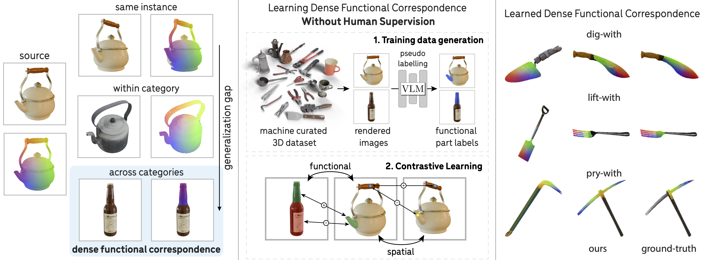

Dense Functional Correspondence refers to establishing dense correspondences across object instances based on function similarity (e.g., "pour-with"). This task is especially challenging when objects have visually different but functionally similar parts, requiring both semantic understanding and structural understanding. We propose a method to learn such correspondences with little human supervision, leveraging automated data curation and annotation, and dense contrastive learning.
Abstract
Establishing dense correspondences across image pairs is essential for tasks such as shape reconstruction and robot manipulation. In the challenging setting of matching across different categories, the function of an object, i.e., the effect that an object can cause on other objects, can guide how correspondences should be established. This is because object parts that enable specific functions often share similarities in shape and appearance. We derive the definition of dense functional correspondence based on this observation and propose a weakly-supervised learning paradigm to tackle the prediction task. The main insight behind our approach is that we can leverage vision-language models to pseudo-label multi-view images to obtain functional parts. We then integrate this with dense contrastive learning from pixel correspondences to distill both functional and spatial knowledge into a new model that can establish dense functional correspondence. Further, we curate synthetic and real evaluation datasets as task benchmarks. Our results demonstrate the advantages of our approach over baseline solutions consisting of off-the-shelf self-supervised image representations and grounded vision language models.
Paper Overview
Why Dense Functional Correspondences?
Establishing pixel-level correspondences between image pairs is a fundamental component of object understanding, supporting applications such as shape reconstruction, image editing, and object manipulation. However, this task becomes increasingly difficult as visual similarity decreases—progressing from multiple views of the same object, to different instances within a category, and ultimately to objects from entirely different object categories. This work targets the most challenging of these scenarios: dense correspondences across object categories. Achieving such correspondences requires models to reason beyond superficial visual cues and instead capture deeper structural and semantic relationships—for example, identifying parts that fulfill similar functions across dissimilar objects. This capability is particularly important in robotics, where tasks such as transferring demonstrations across tools or manipulating novel objects depend on recognizing these functional similarities. Existing approaches based on keypoint taxonomies or affordance segmentation are often limited in precision and generality, as they cannot capture the fine-grained, pixel-level alignments required for precise reasoning and control.
Problem Definition
Despite differences across object categories, individual parts that serve the same function -- like the spout of a kettle and the mouth of a bottle for pouring -- have a higher resemblance with each other than at the overall object level. Such consistency is a consequence of how form follows function -- object parts that fulfill a specific function tend to remain consistent across objects. This observation lead us to define dense functional correspondence through 3D object alignment based on functionally equivalent parts. Specifically, given two objects and an object function, the objects are aligned if and only if the parts that fulfill this function are spatially close to each other. The alignment induces an image-space distance: for any pair of pixels on the functional parts of two objects, the pixels are in functional correspondence if their respective surface points are close in 3D when the objects are aligned.
This definition thus leads to an annotation pipeline for ground-truth functional correspondences:
Annotation Pipeline (Evaluation Only). Given a 3D object pair (left) and a function ("pour-with"), we annotate the functional alignment of two objects by aligning the functional parts in 3D (middle). Afterward, we derive dense 2D correspondences (right) based on 3D distances of corresponding object surface points, with matching pixels shown in the same color.
Approach
Our goal is to develop a scalable learning framework for dense functional correspondences without relying on human-labeled ground truth. Since this task requires both semantic and structural knowledge, we distill from off-the-shelf VLMs to obtain pseudo-labeled training data, which is further combined with dense spatial correspondences from synthetic data in a contrastive learning framework. Below, we show an overview of the pseudo-labeling pipeline, the model architecture, and the training objective.
Training Data Curation via VLM Pseudo Labeling. Given a large unstructured dataset like Objaverse, we leverage off-the-shelf VLMs to curate and label the functional parts. Specifically, GPT-4 generates category-specific functional part prompts, and CogVLM produces bounding box proposals for multi-view image renderings, which are aggregated onto a 3D point cloud. The point cloud is post-processed to produce pixel-level functional part labels for training.
Examples of pseudo-labeled functional parts in point clouds and images using CogVLM. Using the procedure outlined above, we pseudo-label images with masks for the object functional parts. Notably, this pipeline has the ability to generate part labels for non-convex object parts, such as a mug's rim, and for parts that lack clear edge boundaries, such as a teapot's spout. Point clouds are shown in views that best capture the aggregated functional part labels.
Local Functional Feature Extraction. To obtain dense functionally conditioned features, we apply an MLP on top of a function text embedding and the spatial DINO features. The MLP is trained with both functional and spatial contrastive losses.
Training Objectives. To ensure functional part similarity in the learned feature space, we use a part-level contrastive objective to distill functional part semantics from VLMs (left). The spatial contrastive loss (right) serves a complementary role and prevents the model from collapsing predictions for different regions of a part, e.g., the top and bottom of a kettle spout.
Learned Dense Functional Correspondences
Label Transfer Dense Visualizations
Our model effectively transfers functional part labels across diverse object categories. For each target image (right), our model predicts the functional part mask. To generate the transferred color map, each pixel in the predicted mask is matched to its best corresponding pixel within the ground-truth mask of the source image (left) in terms of feature similarity.
Correspondence Discovery on Synthetic Objaverse Evaluation Dataset

The top 10 discovered functional correspondences (separated by 5 pixels each) are shown. Compared to baselines, our approach more reliably retrieves the functionally relevant correspondences with higher spatial precision.
Correspondence Discovery on Real HANDAL Evaluation Dataset

Our model generalizes to real-world images and outperforms baselines in correspondence discovery.